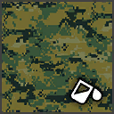
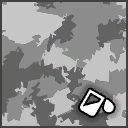

Damage by ammo and quality
The first table lists each ammo type the weapon can load. Damage is one projectile at the base value (Special quality), Armour and Comp. multiply it when the projectile hits an armour plate or a component, and Falloff is how the damage drops over distance. The second table works out one whole shot (damage × pellets × the quality multiplier) for every quality, at close range and before the difficulty setting.
| Ammo | Damage | Pellets | Armour | Comp. | Falloff / range |
|---|---|---|---|---|---|
7.62mm Armor-Piercing Ammoequipment_ammo_762_ap_01 | 33 | 1 | ×1.25 | ×0.75 | drops to 60% by ~550 m max 1,000 m |
7.62mm Full Metal Jacket Ammoequipment_ammo_762_fmj_01 | 33 | 1 | ×1 | ×1 | drops to 60% by ~550 m max 1,000 m |
| Ammo | Q1 | Q2 | Q3 | Q4 | Q5 | Q5 vs armour | Q5 vs components |
|---|---|---|---|---|---|---|---|
| 7.62mm Armor-Piercing Ammo | 16.5 | 20.5 | 24.8 | 29 | 33 | 41.2 | 24.8 |
| 7.62mm Full Metal Jacket Ammo | 16.5 | 20.5 | 24.8 | 29 | 33 | 33 | 33 |
| Quality | Dilapidated | Worn | Good | Exceptional | Special | Experimental |
|---|---|---|---|---|---|---|
| Damage multiplier | ×0.5 | ×0.62 | ×0.75 | ×0.88 | ×1 | ×1 |
- A Dilapidated copy does 50% of the damage of a Special one (×0.5 against ×1), so upgrading quality is a straight damage increase.
- Against armour plates, 7.62mm Armor-Piercing Ammo is best (×1.25 damage to armour).
Experimental ammo of this calibre
The game files flag these rounds as experimental-only: they are for the experimental version. The column shows one shot at the experimental multiplier (×1).
| Ammo | Damage | Pellets | Armour | Comp. | Falloff / range | Effects |
|---|---|---|---|---|---|---|
7.62mm Shock Ammo Exp. onlyequipment_ammo_762_beta_01_q6 | 33 | 1 | ×1 | ×1 | drops to 60% by ~550 m max 1,000 m | Special effect not included (it lives in a separate effect file). |
7.62mm Tar Ammo Exp. onlyequipment_ammo_762_alpha_01_q6 | 33 | 1 | ×1 | ×1 | drops to 60% by ~550 m max 1,000 m | Special effect not included (it lives in a separate effect file). |
| Ammo | Q6 | Q6 vs armour | Q6 vs components |
|---|---|---|---|
| 7.62mm Shock Ammo | 33 | 33 | 33 |
| 7.62mm Tar Ammo | 33 | 33 | 33 |
Experimental versionExperimental AI-76 Assault Rifle

Experimental AI-76 Assault Rifle is the Experimental version of this weapon. Its damage multiplier is ×1 (Special: ×1). Item ID 2104577496. See experimental weapons for how they work.
The game files give the experimental version its own versions of 34 ammo types. These replace the normal values when fired from it. The damage column is one shot at the experimental multiplier (×1).
| Ammo (change from normal) | Damage | Pellets | Q6 | Armour | Comp. | Effects |
|---|---|---|---|---|---|---|
.243 HEAT Ammowpn_rifle_assault_762_02_q6_equipment_ammo_243_alpha_01_q6falloff drops to 35% by ~1000 m → drops to 0% by ~0 m | 100 | 1 | 100 | ×0 | ×2 | – |
.243 Explosive Ammowpn_rifle_assault_762_02_q6_equipment_ammo_243_beta_01_q6falloff drops to 35% by ~1000 m → drops to 0% by ~0 m | 100 | 1 | 100 | ×1 | ×1 | – |
.243 Full Metal Jacket Ammowpn_rifle_assault_762_02_q6_equipment_ammo_243_fmj_01falloff drops to 35% by ~1000 m → drops to 0% by ~0 m | 100 | 1 | 100 | ×1 | ×1 | – |
.243 Soft-Point Ammowpn_rifle_assault_762_02_q6_equipment_ammo_243_sp_01same as normal | 100 | 1 | 100 | ×0.75 | ×1.25 | – |
| Ammo (change from normal) | Damage | Pellets | Q6 | Armour | Comp. | Effects |
|---|---|---|---|---|---|---|
.270 Shock Ammowpn_rifle_assault_762_02_q6_equipment_ammo_270_alpha_01_q6falloff drops to 60% by ~1000 m → drops to 0% by ~0 m | 100 | 1 | 100 | ×1 | ×1 | – |
.270 Medical Ammowpn_rifle_assault_762_02_q6_equipment_ammo_270_beta_01_q6falloff drops to 60% by ~1000 m → drops to 0% by ~0 m | 0 | 1 | 0 | ×1 | ×1 | Heals 20 (4 m) Medical rounds heal players near the impact. |
.270 Full Metal Jacket Ammowpn_rifle_assault_762_02_q6_equipment_ammo_270_fmj_01falloff drops to 60% by ~1000 m → drops to 60% by ~550 m | 100 | 1 | 100 | ×1 | ×1 | – |
.270 Soft-Point Ammowpn_rifle_assault_762_02_q6_equipment_ammo_270_sp_01falloff drops to 60% by ~1000 m → drops to 0% by ~0 m | 100 | 1 | 100 | ×0.75 | ×1.25 | – |
| Ammo (change from normal) | Damage | Pellets | Q6 | Armour | Comp. | Effects |
|---|---|---|---|---|---|---|
.32 ACP Medical Ammowpn_rifle_assault_762_02_q6_equipment_ammo_32acp_alpha_01_q6same as normal | 0 | 1 | 0 | ×1 | ×1 | Heals 5 (3 m) Medical rounds heal players near the impact. |
.32 ACP Radioactive Ammowpn_rifle_assault_762_02_q6_equipment_ammo_32acp_beta_01_q6same as normal | 0 | 1 | 0 | ×1 | ×1 | – |
.32 ACP Full Metal Jacket Ammowpn_rifle_assault_762_02_q6_equipment_ammo_32acp_fmj_01same as normal | 25 | 1 | 25 | ×1 | ×1 | – |
.32 ACP Hollow-Point Ammowpn_rifle_assault_762_02_q6_equipment_ammo_32acp_hp_01same as normal | 25 | 1 | 25 | ×0.75 | ×1.25 | – |
| Ammo (change from normal) | Damage | Pellets | Q6 | Armour | Comp. | Effects |
|---|---|---|---|---|---|---|
.44 Explosive Ammowpn_rifle_assault_762_02_q6_equipment_ammo_44m_alpha_01_q6same as normal | 56 | 1 | 56 | ×1 | ×1 | – |
.44 Tar Ammowpn_rifle_assault_762_02_q6_equipment_ammo_44m_beta_01_q6same as normal | 56 | 1 | 56 | ×1 | ×1 | – |
.44 Full Metal Jacket Ammowpn_rifle_assault_762_02_q6_equipment_ammo_44m_fmj_01same as normal | 56 | 1 | 56 | ×1 | ×1 | – |
.44 Hollow-Point Ammowpn_rifle_assault_762_02_q6_equipment_ammo_44m_hp_01same as normal | 56 | 1 | 56 | ×0.75 | ×1.25 | – |
| Ammo (change from normal) | Damage | Pellets | Q6 | Armour | Comp. | Effects |
|---|---|---|---|---|---|---|
.50 BMG Explosive Ammowpn_rifle_assault_762_02_q6_equipment_ammo_50_alpha_01_q6falloff none → drops to 60% by ~550 m | 100 | 1 | 100 | ×1 | ×1 | – |
.50 BMG Armor-Piercing Ammowpn_rifle_assault_762_02_q6_equipment_ammo_50_ap_01falloff none → drops to 60% by ~550 m | 100 | 1 | 100 | ×2 | ×0.75 | – |
.50 BMG Medical Ammowpn_rifle_assault_762_02_q6_equipment_ammo_50_beta_01_q6falloff none → drops to 60% by ~550 m | 0 | 1 | 0 | ×1 | ×1 | Heals 40 (5 m) Medical rounds heal players near the impact. |
.50 BMG Full Metal Jacket Ammowpn_rifle_assault_762_02_q6_equipment_ammo_50_fmj_01falloff none → drops to 60% by ~550 m | 100 | 1 | 100 | ×1 | ×1.25 | – |
| Ammo (change from normal) | Damage | Pellets | Q6 | Armour | Comp. | Effects |
|---|---|---|---|---|---|---|
5.56mm Corrosive Ammowpn_rifle_assault_762_02_q6_equipment_ammo_556_alpha_01_q6same as normal | 20 | 1 | 20 | ×1.5 | ×0.5 | Over time: 6 every 4 s for 2 s to players and people |
5.56mm Armor-Piercing Ammowpn_rifle_assault_762_02_q6_equipment_ammo_556_ap_01same as normal | 20 | 1 | 20 | ×1.25 | ×0.75 | – |
5.56mm HEAT Ammowpn_rifle_assault_762_02_q6_equipment_ammo_556_beta_01_q6same as normal | 20 | 1 | 20 | ×0 | ×2 | – |
5.56mm Full Metal Jacket Ammowpn_rifle_assault_762_02_q6_equipment_ammo_556_fmj_01same as normal | 20 | 1 | 20 | ×1 | ×1 | – |
| Ammo (change from normal) | Damage | Pellets | Q6 | Armour | Comp. | Effects |
|---|---|---|---|---|---|---|
9x39mm Armor-Piercing Ammowpn_rifle_assault_762_02_q6_equipment_ammo_939_ap_01same as normal | 27 | 1 | 27 | ×1.25 | ×0.75 | – |
9x39mm Full Metal Jacket Ammowpn_rifle_assault_762_02_q6_equipment_ammo_939_fmj_01same as normal | 27 | 1 | 27 | ×1 | ×1 | – |
| Ammo (change from normal) | Damage | Pellets | Q6 | Armour | Comp. | Effects |
|---|---|---|---|---|---|---|
9mm Handgun Shock Ammowpn_rifle_assault_762_02_q6_equipment_ammo_9mm_alpha_01_q6same as normal | 28 | 1 | 28 | ×1 | ×1 | – |
9mm SMG Corrosive Ammowpn_rifle_assault_762_02_q6_equipment_ammo_9mm_alpha_02_q6same as normal | 24 | 1 | 24 | ×1.5 | ×0.5 | Over time: 6 every 4 s for 2 s to players and people |
9mm Armor-Piercing Ammo (Handgun)wpn_rifle_assault_762_02_q6_equipment_ammo_9mm_ap_01same as normal | 28 | 1 | 28 | ×1.25 | ×0.75 | – |
9mm Armor-Piercing Ammo (SMG)wpn_rifle_assault_762_02_q6_equipment_ammo_9mm_ap_02same as normal | 24 | 1 | 24 | ×1.25 | ×0.75 | – |
9mm Handgun HEAT Ammowpn_rifle_assault_762_02_q6_equipment_ammo_9mm_beta_01_q6same as normal | 28 | 1 | 28 | ×0 | ×2 | – |
9mm SMG Explosive Ammowpn_rifle_assault_762_02_q6_equipment_ammo_9mm_beta_02_q6same as normal | 24 | 1 | 24 | ×1 | ×1 | – |
9mm FMJ Ammo (Handgun)wpn_rifle_assault_762_02_q6_equipment_ammo_9mm_fmj_01same as normal | 28 | 1 | 28 | ×1 | ×1 | – |
9mm FMJ Ammo (SMG)wpn_rifle_assault_762_02_q6_equipment_ammo_9mm_fmj_02same as normal | 24 | 1 | 24 | ×1 | ×1 | – |
Attachments4 fit
Every attachment the item table lists as compatible with this weapon (its compatibility list contains the weapon's ToolID 23). Attachments have qualities of their own; vision modules come in one quality only.
| Attachment | Type | Qualities | Nickname | |
|---|---|---|---|---|
 | Red Dot x2 Sight | Scopes | Q1 Q2 Q3 Q4 Q5 | x2 |
 | Assault Rifle Silencer | Silencer | Q1 Q2 Q3 Q4 Q5 | ARS |
 | Assault Rifle Barrel Extension | Extensions | Q1 Q2 Q3 Q4 Q5 | ARE |
 | AI-76 Extended Magazine | Magazines | Q1 Q2 Q3 Q4 Q5 | AI-76M |
Augments24 of 28 fit
Augments go into slots that depend on quality. Following the in-game rules (as the Gen0 Editor applies them): Worn and Good weapons take one Primary augment, Exceptional and Special take a Primary and a Support augment, and Dilapidated and experimental weapons take none. A ✓ means the augment fits this weapon at that quality; the rules come from the game's equipment compatibility table (augments.json).
Primary augments
| Augment | Worn | Good | Exceptional | Special | Restriction | |
|---|---|---|---|---|---|---|
 | Acidic | ✓ | ✓ | ✓ | ✓ | – |
 | Adhesive Rounds | ✓ | ✓ | ✓ | ✓ | – |
 | EMP Detonation | ✓ | ✓ | ✓ | ✓ | – |
 | Health Stealing | ✓ | ✓ | ✓ | ✓ | – |
 | Machine Disarmer | ✓ | ✓ | ✓ | ✓ | – |
 | Prone Specialization | ✓ | ✓ | ✓ | ✓ | Melee weapons cannot use this augmentation. |
 | Rapid Reload | ✓ | ✓ | ✓ | ✓ | Melee weapons cannot use this augmentation. |
 | Scorching | ✓ | ✓ | ✓ | ✓ | Explosive weapons cannot use this augmentation. |
 | Sharpshooter | ✓ | ✓ | ✓ | ✓ | Melee weapons and explosive weapons cannot use this augmentation. |
 | Small Fryer | ✓ | ✓ | ✓ | ✓ | – |
 | Structure Destructor | ✓ | ✓ | ✓ | ✓ | – |
 | Titan Toppler | ✓ | ✓ | ✓ | ✓ | – |
 | Unstoppable Shells | ✓ | ✓ | ✓ | ✓ | Melee weapons and explosive weapons cannot use this augmentation. |
 | Uranium Infused | ✓ | ✓ | ✓ | ✓ | – |
Don't fit: Final Round (Only handguns can use this augmentation.); Trick Shot Master (Only shotguns and melee weapons can use this augmentation.)
Support augments
| Augment | Exceptional | Special | Restriction | |
|---|---|---|---|---|
 | Crouching Tiger | ✓ | ✓ | Melee weapons cannot use this augmentation. |
 | Hip Shooter | ✓ | ✓ | Melee weapons cannot use this augmentation. |
 | Hit and Run | ✓ | ✓ | – |
 | Oversized Magazine | ✓ | ✓ | Melee weapons and explosive weapons cannot use this augmentation. |
 | Quick Learner | ✓ | ✓ | – |
 | Scope Scout | ✓ | ✓ | Only weapons that can have a scope attached can use this augmentation. |
 | Skilled Spotter | ✓ | ✓ | – |
 | Slow and Steady | ✓ | ✓ | Melee weapons cannot use this augmentation. |
 | Sound Muffling | ✓ | ✓ | – |
 | Stabilization | ✓ | ✓ | Melee weapons cannot use this augmentation. |
Don't fit: Flurry of Blows (Only melee weapons can use this augmentation.); Power Attacker (Only melee weapons can use this augmentation.)
Skins4
Skins change only the look. All skins: weapon skins.

Digital ForestDLC
Disruptive SnowDLC PrototypeDLC
PrototypeDLC Street Art - AI-76 Assault RifleStarts locked
Street Art - AI-76 Assault RifleStarts lockedItem IDs
The item hash of each quality, as save editors and the Gen0 Editor use them. Each quality is a separate item in the game's item table.
| Quality | Item ID | Icon |
|---|---|---|
| Dilapidated | 3528235377 |  |
| Worn | 4170566388 | |
| Good | 3252499511 | |
| Exceptional | 2593629241 | |
| Special | 2623516647 | |
| Experimental | 2104577496 | |
Where to find it
The world files place 48 copies of the AI-76 Assault Rifle at fixed spots (on top of the random weapon crates). Each spot has a fixed quality; this table counts them by region.
| Region | Dilapidated | Worn | Good | Exceptional | Special | Total |
|---|---|---|---|---|---|---|
| Archipelago | 3 | – | – | – | – | 3 |
| South Coast | 1 | – | 1 | – | – | 2 |
| Farmlands | 2 | 2 | 1 | – | – | 5 |
| Forest | 1 | – | 1 | 1 | – | 3 |
| Mountains | – | – | – | 1 | – | 1 |
| Marshlands | 4 | 14 | 4 | – | 1 | 23 |
| North Coast | 1 | 6 | 3 | – | – | 10 |
| Himfjäll (Alpine Unrest) | – | – | 1 | – | – | 1 |
| Total | 12 | 22 | 11 | 2 | 1 | 48 |
The map opens on part of the 48 spots; zoom out (−) or drag to see the rest, use the table, or open the full map.
Every spot, with the nearest named map location and its distance. Coordinates are the game's world x / z, as on the interactive map.
Ammo and related weapons
Ammo it loads: 7.62mm Armor-Piercing Ammo, 7.62mm Full Metal Jacket Ammo.
Experimental-only rounds (for the experimental version): 7.62mm Shock Ammo, 7.62mm Tar Ammo.
Other weapons that load the same ammo: Automatgevär 4, Kvm 59 Machine Gun, N144 Minigun, PM-71 Machine Gun, N60 Machine Gun, Vintovka 1891, Kotenok Sniper Rifle, S21.
Other assault rifles: Automatgevär 5, Automatgevär 4, AT-WAD Assault Rifle, N16 Assault Rifle.